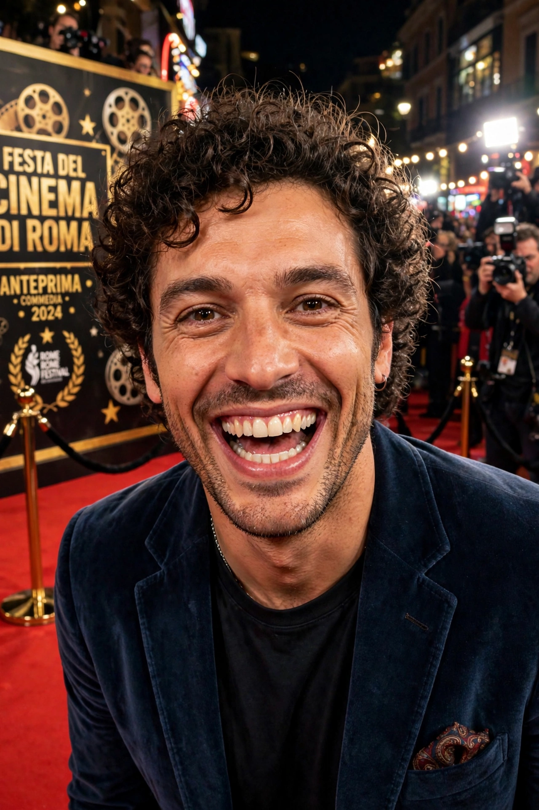

| Roberto Benigni | |
|---|---|
 Benigni in Rome | |
| Born | 27 October 1952, Castiglion Fiorentino, Tuscany, Italy |
| Occupation | Actor, comedian, screenwriter, director |
| Years active | 1972–present |
| Spouse | Nicoletta Braschi (m. 1991) |
Roberto Remigio Benigni (born 27 October 1952) is an Italian actor, comedian, screenwriter and director. He gained international fame for writing, directing and starring in Life Is Beautiful (1997), for which he won the Academy Awards for Best Actor and Best Foreign Language Film — famously celebrating by climbing over the seats at the ceremony.
Benigni emerged from the Italian alternative theatre scene of the 1970s and became a beloved television and stand-up figure with routines that satirised Italian politics. His film breakthrough came with Nothing Left to Do But Cry (1984), co-directed with Massimo Troisi. He starred for Jim Jarmusch in Down by Law (1986) and Night on Earth (1991), and won huge Italian audiences with Johnny Stecchino (1991) and The Monster (1994), among the highest-grossing Italian films of their era.
Life Is Beautiful, his tragicomic fable of a father shielding his son from the horror of a Nazi concentration camp, won the Grand Prix at Cannes and three Academy Awards. Later works include Pinocchio (2002) and The Tiger and the Snow (2005). He is also celebrated for his theatrical recitals of Dante's Divine Comedy, performed to vast audiences across Italy.